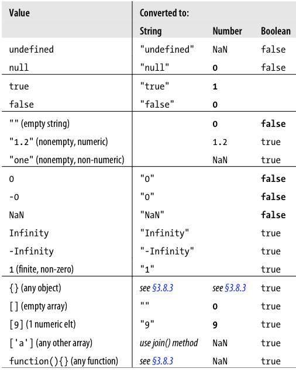

JavaScript
The World's Most Misunderstood Programming Language
-- Douglas Crockford
Part 1
Structure, Types, Operators, Statments, Objects, Booleans, Strings, Numbers, Arrays, Type casting
Presentation focuses on ECMAScript 5
JavaScript Lexical Structure
- Unicode version 3 or later
- Case sensitive keywords and identifiers
- Optional semicolons
Keywords
Also called reserved words
Cannot be used as identifiers
Identifiers
Used to name variables, functions and labels
Literal
Directly appearing data value
12
1.2
"hello world"
'Hi'
true
false
/javascript/gi // Regular expression literal
null // Absence of an object
{ x: 1, y: 2 } // Object literal
[1, 2, 3, 4, 5] // Array literal
var square = function(x) { return x*x; }; // Function literal
Reserved Words
break, case, catch, continue, debugger, default, delete, do, else, false, finally, for, function, if, in, instanceof, new, null, return, switch, this, throw, true, try, typeof, var, while, with, class, const, enum, export, extends, import, super
Reserved Words
in strict mode
implements, interface, let, package, private, protected, public, static, yield
not allowed as variable, function, or parameter names:
arguments, eval
Reserved Words
Not really reserved but you should avoid them
abstract, boolean, byte, char, class, const, double, enum, export, extends, final, float, goto, implements, import, int, interface, long, native, package, private, protected, public, short, static, super, synchronized, throws, transient, volatile
Global variables and functions
arguments, Array, Boolean, Date, decodeURI, decodeURIComponent, encodeURI, encodeURIComponent, Error, eval, EvalError, Function, Infinity, isFinite, isNaN, JSON, Math, NaN, Number, Object, parseFloat, parseInt, RangeError, ReferenceError, RegExp, String, SyntaxError, TypeError, undefined, URIError
Comments
// Single line comment
/*
* Multiple
* line
* comment
*/
var a = 12; // Another single line comment
Optional semicolon trap
function func1()
{
return
123
}
function func2()
{
return 123
}
clog( func1() ); /* undefined */
clog( func2() ); /* 123 */
JavaScript Types
primitive types and object types
JavaScript primitive types
number, string and boolean
var msg = 'Hello World!';
var num1 = 123, num2 = 12.56;
var isOpen = false, willOpen = true;
JavaScript primitive types
null and undefined are also primitive types
var someVar; /* undefined */
var obj = null;
Any value that is NOT primitive type is an OBJECT
primitive types are immutable
primitive types are passed by value
object types are passed by reference
primitive types are compared by value
object types are compared by reference
var num1 = 1, num2 = 1, num3 = 3
var obj1 = {x: 1, y: 2}, obj2 = {x: 1, y: 2};
clog( num1 == num2 ); /* true */
clog( num1 == num3 ); /* false */
clog( obj1 == obj2 ); /* false */
Wrapper objects
how come primitive types behave like objects?
var s = 'abcdef', f = 12.13, b = true;
s = s.toUpperCase(); /* ( new String(s) ).toUpperCase() */
f = f.toFixed() /* ( new Number(f) ).toFixed() */
b = b.toString() /* ( new Boolean(b) ).toString() */
JavaScript object types
Array(), Boolean(), Date(), Error(), Function(), Math(), Number(), Object(), String(), RegExp()
JavaScript Operators
interesting examples
+ operator
convert to number
clog( +"12" ); /* 12 */
clog( +"12.13" ); /* 12.13 */
clog( +"abc" ); /* NaN */
clog( +[] ); /* 0 */
clog( +{} ); /* NaN */
clog( +( new Val(123, 321) ) ); /* 123 */
~ operator
invert bits
clog( ~~12 ); /* 12 */
clog( ~~"12" ); /* 12 */
clog( ~~"12.13" ); /* 12 */
clog( ~~"-12.13" ); /* -12 */
clog( ~~"abc" ); /* 0 */
clog( ~~[] ); /* 0 */
clog( ~~{} ); /* 0 */
! operator
invert boolean value
clog( !!null ); /* false */
clog( !!undefined ); /* false */
clog( !!0 ); /* false */
clog( !!"" ); /* false */
clog( !!12 ); /* true */
clog( !!"12" ); /* true */
clog( !!"12.13" ); /* true */
clog( !!"-12.13" ); /* true */
clog( !!"abc" ); /* true */
clog( !![] ); /* true */
clog( !!{} ); /* true */
==, ===, !=, !== operators
equality and inequality operators
clog( 1 == 1 ); /* true */
clog( 1 == '1' ); /* true */
clog( 1 === '1' ); /* false */
clog( '1' === '1' ); /* true */
&& logical AND operator
var obj = { x : 33 };
var p = null;
/* 33: obj is truthy, so return value of obj.x */
clog( obj && obj.x );
/* null: p is falsy, so return it and don't evaluate p.x */
clog (p && p.x );
var a = true, b = true;
if (a == b) clog('called'); // Invoke clog() only if a == b
(a == b) && clog('called'); // This does the same thing
|| logical OR operator
var obj = {};
var max = obj.max_width || obj.other_width || 500;
clog( max ); /* 500 */
function fn(x) {
x = x || 123;
return x;
}
clog( fn() ); /* 123 */
typeof operator
function example() { return 1; }
clog( typeof undefined ); /* 'undefined' */
clog( typeof null ); /* 'object' */
clog( typeof true ); /* 'boolean' */
clog( typeof false ); /* 'boolean' */
clog( typeof 123 ); /* 'number' */
clog( typeof NaN ); /* 'number' */
clog( typeof 'str' ); /* 'string' */
clog( typeof example ); /* 'function' */
clog( typeof {} ); /* 'object' */
All operators
++, --, -, +, ~, !
delete, typeof, void
*, /, %
<<, >>, >>>
<, <=, >, >=
instanceof, in
==, !=, ===, !==
&, ^, |, &&, ||, ?:
=, *=, /=, %=, +=, -=, &=, ^=, |=
<<=, >>=, >>>=
,
JavaScript Statements
interesting examples
switch statement
sameness is determined by the === operator
var a = '123';
switch (a) {
case 123:
clog('case 1');
break;
case '123':
clog('case 2');
break;
}
for/in statement
Enumerates only the enumerable properties
function forin(name, val){
console.groupCollapsed(name);
for (var p in val) {
clog( p );
}
console.groupEnd();
}
forin('object', {x: 12, y: 13, z: undefined, n: null});
forin('array', [1, 2, 3, 10]);
forin('string', 'some text');
forin('number', 123);
forin('null', null);
forin('undefined', undefined);
try/catch/finally statement
function testTry() {
try {
throw 'WAT?';
return 'val0';
} catch (e) {
clog('Error: ', e)
return 'val1';
} finally {
clog( 'finally' );
}
return 'val2';
}
clog( testTry() );
All statments
var, function
if, else if, switch
while, do/while, for, for/in
label, break, continue, return, throw, try/catch/finally
with, debbuger, "use strict"
JavaScript types
null
A keyword indicating the absence of a object
clog( typeof null ); /* 'object' */
undefined
- Value of variables that have not been initialized
- Value of non existing object property
- Value of non existing array index
- Returned by functions that have no return value
- Value of not supplied function parameters
undefined is a predefined global variable (not a language keyword like null) that is initialized to the undefined value
null and undefined
Are the only values that cannot have properties!
var num = 1, str = 'string', bol = true, nul = null, undef;
clog( num.propName ); /* undefined */
clog( str.propName ); /* undefined */
clog( bol.propName ); /* undefined */
clog( nul.propName );
clog( undef.propName );
Objects
Fundamental data types
var point = {
propName1: 'value1',
propName2: 'value2'
};
unordered collection of properties
each of which has a name and a value
Object property attributes
- writable - property value can be set
- enumerable - property name is enumerable
- configurable - property can be deleted or its attributes altered
Creating objects
var o1 = {};
var o2 = new Object();
var o3 = Object.create(Object.prototype);
cdir( o1 );
cdir( o2 );
cdir( o3 );
Prototypes
Every object has a prototype
var point = {x: 10, y: 20};
cdir( point );
Prototypes
var a = new Array(); cdir( a );
var d = new Date(); cdir( d );
var p = new Point(10, 20); cdir( p );
Prototype chains
var point1 = new Point(10, 20); cdir( point1 );
var point2 = new Point(30, 40); cdir( point2 );

Getting and Setting Properties
var point = {x: 10, y: 20};
clog( point.x ); /* 10 */
clog( point['x'] ); /* 10 */
clog( point.notThere ); /* undefined */
clog( point['notThere'] ); /* undefined */
point.x = 20;
point.z = 20;
cdir( point );
Testing Properties
var point = new Point(10, 20);
clog( 'notThere' in point ); /* false */
clog( point.hasOwnProperty('notThere') ); /* false */
clog( point.hasOwnProperty('x') ); /* true */
clog( point.hasOwnProperty('set') ); /* true */
clog( point.hasOwnProperty('toString') ); /* false */
clog( point.propertyIsEnumerable('toString') ); /* false */
clog( point.propertyIsEnumerable('set') ); /* true */
Testing Properties
var point = new Point(10, 20);
// Test property existance
var name = point && point.name;
clog( name ); /* undefined */
// Get property value or default value
var name = name || 'Unknown';
clog( name ); /* undefined */
Enumerating Properties
var point = new Point(10, 20);
for(var p in point) {
clog( p );
}
Boolean Values
Any JavaScript value can be converted to a boolean value
The following values convert to false:
undefined, null, 0, -0, NaN, ""
All other values convert to true
String
- immutable ordered sequence of 16-bit values
- all methods working on strings return new string
- values typically represent a Unicode character
- strings can be treated like read-only arrays
var msg = 'Hello World!';
clog( msg[6] ); /* W */
Working with strings
// Concatenate
var msg1 = 'Hello ' + 'World!';
var msg2 = 'Hello '.concat('World!');
clog( msg1 );
clog( msg2 );
// Check equality
clog( msg1 === msg2 ); /* true */
// Check inequality
var msg3 = 'Hello Rafal';
clog( msg1 > msg3 ); /* true */
// Compare length
clog( msg1.length > msg3.length ); /* true */
String methods
String methods #1
var msg = 'Hello World!';
// get the Nth character from a string
clog( msg.charAt(1) ); /* e */
// get the Nth character code from a string
clog( msg.charCodeAt(1) ); /* 101 */
// concatenate strings
clog( msg.concat('!!') ); /* Hello World!!! */
// create a string from character encodings
clog( String.fromCharCode(104, 101, 108, 108, 111) ); /* hello */
String methods #2
String.indexOf(substring[, start])
search a string
// 012345678901
var msg = 'Hello World!';
clog( msg.indexOf('World') ); /* 6 */
clog( msg.indexOf('l') ); /* 2 */
clog( msg.indexOf('l', 5) ); /* 9 */
clog( msg.indexOf('R') ); /* -1 */
String methods #3
String.lastIndexOf(substring[, start])
search a string backward
// 012345678901
var msg = 'Hello World!';
clog( msg.lastIndexOf('World') ); /* 6 */
clog( msg.lastIndexOf('l') ); /* 9 */
clog( msg.lastIndexOf('l', 5) ); /* 3 */
clog( msg.lastIndexOf('R') ); /* -1 */
String methods #4
String.localeCompare()
compare one strings using locale-specific ordering
var strings = ['ał', 'al', 'ak', 'am'];
strings.sort();
clog ( strings ); /* ['ak', 'al', 'am', 'ał'] */
strings.sort(function(a, b) { return a.localeCompare(b) });
clog ( strings ); /* ['ak', 'al', 'ał', 'am'] */
String methods #5
String.match(regexp)
find one or more regular-expression matches
var msg = '1 plus 2 equals 3';
clog( msg.match(/\d/) ); /* ['1', index: 0, input: '1 plus 2 equals 3'] */
clog( msg.match(/\d/g) ); /* ['1', '2', '3'] */
clog( msg.match(/World/g) ); /* null */
String methods #6
String.replace(regexp, replacement)
replace substring(s) matching a regular expression
var msg = 'Doe, John is reading a book about javaScript';
// Ensure that the capitalization of the word "JavaScript"
clog( msg = msg.replace(/javascript/i, 'JavaScript') );
// Convert a single name from “Doe, John” format to “John Doe”
clog( msg = msg.replace(/(\w+)\s*,\s*(\w+)/, "$2 $1") );
// Capitalize the first letter of all words in a string
msg = msg.replace(/\b\w+\b/g, function (word) {
return word.substring(0, 1).toUpperCase() + word.substring(1);
});
clog( msg );
String methods #7
String.search(regexp)
search for a regular expression
var msg = 'JavaScript is fun';
clog( msg.search(/script/i) ) /* 4 */
clog( msg.search(/a(.)a/) ) /* 1 */
String methods #8
String.slice(start, end)
extract a substring
// 0123456
var msg = 'abcdefg';
clog( msg.slice(0, 4) ) /* abcd */
clog( msg.slice(2, 4) ) /* cd */
clog( msg.slice(4) ) /* efg */
clog( msg.slice(3, -1) ) /* def */
clog( msg.slice(3, -2) ) /* de */
clog( msg.slice(-3, -1) ) /* ef */
String methods #9
String.split(delimiter, limit)
break a string into an array of strings
var msg = 'John is reading';
clog( msg.split(' ') ) /* ['John', 'is', '', 'reading'] */
clog( msg.split(/\s+/) ) /* ['John', 'is', 'reading'] */
clog( 'hello'.split('') ) /* ['h', 'e', 'l', 'l', 'o'] */
clog( 'hello'.split('', 3) ) /* ['h', 'e', 'l'] */
String methods #10
String.substr(start, limit)
extract a substring
// 0123456
var msg = 'abcdefg';
clog( msg.substr(2, 2) ) /* cd */
clog( msg.substr(3) ) /* defg */
clog( msg.substr(-3, 2) ) /* ef */
String methods #11
String.substring(from, to)
return a substring of a string
from and to are nonnegative values
// 0123456
var msg = 'abcdefg';
clog( msg.substring(2, 2) ) /* */
clog( msg.substring(3, msg.length) ) /* defg */
String methods #12
Case manipulation
var msg = 'John is reading';
clog( msg.toLowerCase() ) /* john is reading */
clog( msg.toLocaleLowerCase() ) /* john is reading */
clog( msg.toUpperCase() ) /* JOHN IS READING */
clog( msg.toLocaleUpperCase() ) /* JOHN IS READING */
Numbers
- No distinction between integer and floating-point values
- Numbers are represented as 64-bit floating-point values
Special numeric values
Infinities
| Number.POSITIVE_INFINITY | Positive infinity |
| Infinity | Same as above |
| 1/0 | Same as above |
| Number.MAX_VALUE + 1 | Evaluates to positive Infinity |
| Number.NEGATIVE_INFINITY | Negative infinity |
| -Infinity | Same as above |
| -1/0 | Same as above |
| -Number.MAX_VALUE - 1 | Evaluates to negative Infinity |
Special numeric values
Other
| NaN | Not a number |
| Number.NaN | Not a number |
| 0/0 | Evaluates to Not a number |
| Number.MIN_VALUE/2 | Underflow: evaluates to 0 |
| -Number.MIN_VALUE/2 | Negative zero |
| -1/Infinity | Also negative zero |
| -0 |
Infinities
clog( 1/0 ); /* Infinity */
clog( -1/-0 ); /* Infinity */
clog( 1/-0 ); /* -Infinity */
clog( -1/0 ); /* -Infinity */
Not numbers
clog( 0 === -0 ); /* true */
clog( 'abc'/0 ); /* NaN */
clog( 0/0 ); /* NaN */
clog( NaN == NaN ); /* false */
clog( NaN === NaN ); /* false */
clog( isNaN(0/0) ); /* true */
Floating-point rounding errors
var x = 0.3 - 0.2; /* 0.1 */
var y = 0.2 - 0.1; /* 0.1 */
clog( x == y ) /* ? */
clog( x == 0.1 ) /* ? */
clog( y == 0.1 ) /* ? */
clog( x, y ) /* ? */
Array
Array is an ordered collection of values
Each value is called an element, and each element has a numeric position in the array, known as its index
Index is zero-based
Creating arrays
var a2 = new Array(10); /* Array with specified lenght */
var emoty1 = new Array(); /* Array with no elements */
var empty2 = [];
var primes = [2, 3, 5]; /* Array with numeric elements */
var misc = [ 1.1, true, "a", ]; /* 3 elements + trailing comma */
clog( misc );
clog( a2 );
Array objects
Arrays are a specialized kind of object
The square brackets work just like the square brackets used to access object properties
JavaScript converts the numeric array index you specify to a string — the index 1 becomes the string "1" — then uses that string as a property name
Array objects
There is nothing special about the conversion of the index from a number to a string
You can do that with regular objects, too:
var o = {}; // Create a plain object
o[1] = "one"; // Index it with an integer
What is special about arrays is that when you use property names that are non-negative integers, the array automatically maintains the value of the length property for you
Array length
var a = []; clog( a.length ); /* 0 */
a[0] = 0; clog( a.length ); /* 1 */
a['my'] = 's'; clog( a.length ); /* 1 */
a[1] = 1; clog( a.length ); /* 2 */
a[6] = 6; clog( a.length ); /* 7 */
a["7"] = 7; clog( a.length ); /* 8 */
a[-1.25] = -1.25; clog( a.length ); /* 8 */
a[-15] = -15; clog( a.length ); /* 8 */
clog( a );
Array not existant index
var a = [1, 2, 3];
clog( a[2] ); /* 3 */
clog( a[4] ); /* undefined */
clog( a['my'] ); /* undefined */
clog( a[-1] ); /* undefined */
/* Just like with not exisitng object properties */ clog('------');
var o = {};
clog( o.propName ); /* undefined */
clog( o['propName'] ); /* undefined */
Adding / deleting array elements
var a = [1, 2];
a[2] = 3; clog( a, a.length );
delete a[5]; clog( a, a.length );
delete a[2]; clog( a, a.length );
a.length = 2; clog( a, a.length );
Iterating Arrays #1
array length looked up on every iteration
var a = [1, , null, false, 3];
for (var x = 0; x < a.length; x++) {
clog(a[x]);
}
Iterating Arrays #2
array length looked up only once
var a = [1, , null, false, 3];
for (var x = 0, len = a.length; x < len; x++) {
clog(a[x]);
}
Iterating Arrays #3
skip nonexistent elements
var a = [1, , null, false, 3];
for (var x = 0, len = a.length; x < len; x++) {
if (a[x] === undefined) continue;
clog(a[x]);
}
clog('---');
for (x in a) {
clog(a[x]);
}
Iterating Arrays #4
skip enumerable inherited properties
var a = [1, , null, false, 3];
for (var x in a) {
if (!a.hasOwnProperty(i)) continue;
// ...
}
Iterating Arrays #5
forEach
var a = [1, , null, false, 3];
a.forEach(function (value, key, array) { clog(arguments) });
no way to terminate iteration
Array methods
Array methods
Array.concat()
concatenate arrays
var a = [1,2,3];
clog( a.concat(4, 5) ) /* [1,2,3,4,5] */
clog( a.concat([4,5]) ) /* [1,2,3,4,5] */
clog( a.concat([4,5],[6,7]) ) /* [1,2,3,4,5,6,7] */
clog( a.concat(4, [5,[6,7]]) ) /* [1,2,3,4,5,[6,7]] */
Array methods
Array.every(predicate[, o])
test whether a predicate is true for every element
predicate(array[i], i, array)
var a1 = [1, 2, 3].every(function(x) { return x < 5; });
clog( a1 ); /* true */
var a2 = [1, 2, 3].every(function(x) { return x < 3; });
clog( a2 ); /* false */
Array methods
Array.filter(predicate[, o])
return array elements that pass a predicate
predicate(array[i], i, array)
var a1 = [1, 2, 3].filter(function(x) { return x > 1; });
clog( a1 ); /* [2, 3] */
Array methods
Array.forEach(f[, o])
invoke a function for each array element
f(array[i], i, array)
var a = [1,2,3];
a.forEach(function(x ,i ,a) { a[i]++; });
clog( a ); /* [2, 3, 4] */
Array methods
Array.indexOf(value[, start])
search an array
the === operator is used to test equality
clog( ['a', 'b', 'c'].indexOf('b') ) /* 1 */
clog( ['a', 'b', 'c'].indexOf('d') ) /* -1 */
clog( ['a', 'b', 'c'].indexOf('a', 1) ) /* -1 */
Array methods
Array.join(glue)
concatenate array elements to form a string
var a1 = [1, 2, 3];
clog( a1.join() ); /* 1,2,3 */
clog( a1.join(" ") ); /* 1 2 3 */
clog( a1.join("") ); /* 123 */
clog( (new Array(10)).join('-') ); /* ---------- */
Array methods
Array.lastIndexOf(value[, start])
search backward through an array
the === operator is used to test equality
clog( ['a', 'b', 'c'].lastIndexOf('b') ) /* 1 */
clog( ['a', 'b', 'c'].lastIndexOf('d') ) /* -1 */
clog( ['a', 'b', 'c'].lastIndexOf('a', 1) ) /* 0 */
Array methods
Array.map(f[, o])
compute new array elements from old
a[i] = f(array[i], i, array)
clog( [1,2,3].map(function(x) { return x*x; }) ); /* [1,4,9] */
Array methods
Array.pop()
remove and return the last element of an array
Array.push(value, ...)
append elements to an array
var stack = [];
stack.push(1, 2);
stack.pop();
stack.push([4,5]);
stack.pop()
clog( stack ); /* [1] */
Array methods
Array.reduce(f[, initial])
compute a value from the elements of an array
var r = [1, 2, 3].reduce(function(x, y) { return x + y; })
clog( r ); /* 6 */
var r = [1, 2, 3].reduce(function(x, y) { return x + y; }, 10)
clog( r ); /* 16 */
Array methods
Array.reduceRight(f[, initial])
reduce an array from right-to-left
var r = [2, 10, 60].reduceRight(function(x,y) { return x / y; })
clog( r ); /* 6 */
var r = [5, 2].reduceRight(function(x,y) { return x / y; }, 50)
clog( r ); /* 5 */
Array methods
Array.reverse()
reverse arrays
var a1 = [1, 2, 3];
clog( a1.reverse() ); /* 3, 2, 1*/
Array methods
Array.shift()
shift array elements down
var a1 = [1, 2, 3];
clog( a1.shift(), a1 ); /* 1 [2, 3] */
clog( a1.shift(), a1 ); /* 2 [3] */
Array methods
Array.slice(start, end)
return a portion of an array
var a = [1, 2, 3, 4, 5];
clog( a.slice(0, 3) ); /* [1, 2, 3] */
clog( a.slice(3) ); /* [4, 5] */
clog( a.slice(1, -1) ); /* [3, 4, 5] */
clog( a.slice(-3, -2) ); /* [3] */
Array methods
Array.some(predicate[, o])
test whether a predicate is true for any element
var s = [1,2,3].some(function(x) { return x > 5; });
clog( s ); /* false */
s = [1,2,3].some(function(x) { return x > 2; });
clog( s ); /* true */
s = [].some(function(x) { return true; });
clog( s ); /* false */
Array methods
Array.sort([f])
var a1 = [33, 44, 1111, 222];
// By default sorts in alphabetical order.
// Temporarily converting them to strings
// to perform the comparison, if necessary.
clog( a1.sort() ); /* [1111, 222, 33, 44] */
/* Numerical order: [33, 44, 222, 1111] */
clog( a1.sort(function(a, b) { return a-b; }) );
/* Reverse numerical order: [1111, 222, 44, 33] */
clog( a1.sort(function(a, b) { return b-a; }) );
Array methods
Array.splice(start, deleteCount, value, ...)
insert, remove, or replace array elements
Returns: an array containing the elements, if any, deleted from array
var a = [1, 2, 3, 4, 5, 6, 7, 8];
clog( a.splice(1, 2) , a); /* [2, 3] [1, 4, 5, 6, 7, 8] */
clog( a.splice(1, 1) , a); /* [4] [1, 5, 6, 7, 8] */
clog( a.splice(1, 0, 2, 3) , a); /* [] [1, 2, 3, 5, 6, 7, 8] */
Array methods
Array.unshift(value, ...)
insert elements at the beginning of an array
Returns: the new length of the array
var a = [];
clog( a.unshift(1) , a); /* 1 [1] */
clog( a.unshift(22) , a); /* 2 [22, 1] */
clog( a.shift() , a); /* 22 [1] */
clog( a.unshift(33, [4, 5]) , a); /* 3 [33, [2], 1] */
filter(), forEach(), every(), map(), some()
- length taken before it begins looping
- if the invoked function appends new elements to array, those newly-added elements will not be looped over
- if the function alters existing elements that have not yet been looped over, it is the altered values that will be passed
Type conversions
Type conversion example #1
var p = new Point(11, 22);
clog( 'Point: ' + p ); /* Point: [object Object] */
clog( 'Point: ' + (p*2) ); /* Point: NaN */
// To string conversion
Point.prototype.toString = function() {
return this.x + ', ' + this.y;
}
clog( 'Point: ' + p ); /* Point: 11, 22 */
clog( 'Point: ' + (p*2) ); /* Point: NaN */
// To number conversion
Point.prototype.valueOf = function() {
return this.x + this.y;
}
clog( 'Point: ' + p ); /* Point: 33 */
clog( 'Point: ' + (p*2) ); /* Point: 66 */
Type conversion example #2
clog( 5 + [] ); /* 5 */
clog( 5 + [1, 2, 3] ); /* 51, 2, 3 */
clog( 'Array: ' + [1, 2, 3] ); /* Array: 1, 2, 3 */
clog( "3" + 4 + 5 ); /* "345" */
clog( 3 + 4 + "5" ); /* "75" */
clog( " \t\r\n " == 0 ); /* true */